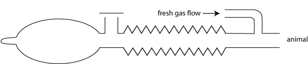
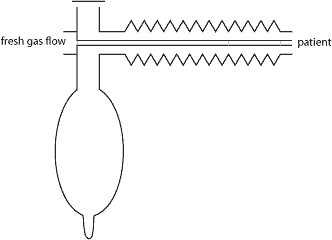
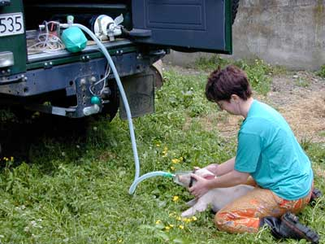

Mapleson D circuits
The fresh gas flow rate for these circuits to prevent rebreathing depends on the animal's respiratory rate. 200 - 300mL/kg/min is reasonably safe; 500mL/kg/min wil prevent rebreathing under almost all circumstances. Low flow rates can only be safely used if you are monitoring respiratory carbon dioxide (and know what the numbers mean!!).
T piece

Bain


Bain circuit in use in the field.
Parallel Bain
This is effectively a T piece and works the same way. The commonest one in use is a Humphrey's ADE system set to DE.
How it works